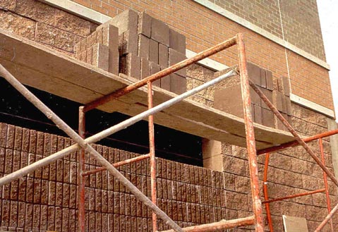

Fabricated frame scaffolds are the most common type of scaffold because they are versatile, economical, and easy to use. They are frequently used in one or two tiers by residential contractors, painters, etc., but their modular frames can also be stacked several stories high for use on large-scale construction jobs. NOTE: Except where indicated, the same basic scaffold requirements that appear in this module also apply to manually propelled, pump jack, ladder jack, tube and coupler, and pole scaffolds, as well as the specialty scaffolds described in Supported Scaffolds. Additional requirements for these scaffolds can be found in their respective modules.
Use this training tool to review the safety requirements for a frame scaffold, in the following phases:
Support Structure
To control the risk of a scaffold falling or collapsing, employers must assure that scaffolds are built within OSHA standards relating to strength and structural integrity.
NOTE: Except where indicated, these requirements also apply to manually propelled, pump jack, ladder jack, tube and coupler, and pole scaffolds, as well as the specialty scaffolds described in the Supported Scaffolds module.
Figure 4. When scaffold frames are interconnected, failure of one frame can cause the whole system to collapse.
- Scaffolds and scaffold components must be capable of supporting, without failure, their own weight and at least 4 times their maximum intended load. (Figure 4)
- Scaffolds shall be altered only under the supervision and direction of a competent person.
Tip: A scaffold can be overloaded by removing the braces, which causes the weight on the scaffold to be distributed to fewer structural members. Even if they are "in the way," braces should not be removed while work is being performed on a scaffold!
Worker Falls from Collapsing Scaffold
Case Report:
- A worker was standing on a scaffold 6' high, measuring windows for covers to be installed later. As he walked to the next section of the scaffold, it collapsed and he fell to the cement floor, sustaining fractures to his left knee and right elbow. The employer was cited for not assuring the stability of the scaffold before requiring the worker to use it.
Figure 5. Poor attempt at securing cross bracing with wire.
- Frames and panels must be connected by cross, horizontal, or diagonal braces, alone or in combination, which secure vertical members together laterally.
- As frames are stacked, cross braces must be of such length as will automatically keep the scaffold plumb, level, and square.
- All brace connections must be secured to prevent dislodging. (Figure 5)
Tip: A level may be used frequently during assembly to guarantee that new structural components remain in line.

- Frames and panels must be joined together vertically by coupling or stacking pins or equivalent means.
- Frames and panels must be locked together to prevent uplift, where uplift can occur. Uplift is the separation of a frame from the frame below it.
Tip: Separation of frames can occur in high winds (uplift), or when workers climb endframes, overload the platform, or strike the scaffold with tools, materials, etc.
Improper Coupling Results in Two Deaths
Case Report:
- A tubular, welded-frame scaffold, 31 feet high, was erected to paint a 33-foot high sign at the entrance of a new shopping mall. After the sign had been partially painted, the scaffold was moved to allow concrete to be placed around the sign. Several days later, a crew of seven workers was instructed to replace the scaffold and finish painting the sign. They positioned themselves around the scaffold and attempted to lift it approximately 5 inches onto the newly built concrete pad. As they were lifting the scaffold, the top section partially separated from the adjoining section, toppled over, and contacted a power line. A 28-year old carpenter and a 31-year old laborer were electrocuted. The other five workers were hospitalized with electrical burns.
- Scaffold components manufactured by different manufacturers must not be intermixed, unless they fit together without being forced and the scaffold's structural integrity is maintained.
- Scaffold components manufactured by different manufacturers are not allowed to be modified to make them fit together, unless a competent person determines that the resulting scaffold is structurally sound.
- Scaffold components made of dissimilar metals must not be used together unless a competent person has determined that galvanic action will not reduce the strength of any component below OSHA standards.
Fall Protection
The number one scaffold hazard is worker falls. Fall protection consists of either personal fall-arrest systems or guardrail systems, and must be provided on any scaffold 10 feet or more above a lower level. Specific requirements are described below.
NOTE: Except where indicated, these requirements also apply to manually propelled, pump jack, ladder jack, tube and coupler, and pole scaffolds, as well as the specialty scaffolds described in the Supported Scaffolds module.
- Each employee on a scaffold more than 10 feet above a lower level must be protected from falling to that lower level.
- Fall protection consists of either personal fall arrest systems or guardrail systems meeting OSHA requirements.
- Employees performing overhand bricklaying operations from a supported scaffold must be protected from falling from all open sides and ends of the scaffold, except at the side next to the wall being laid.

Figure 10. An example of a lanyard attached to a vertical lifeline. Note that the worker is wearing a safety belt, whereas the new standard requires a full body harness.
- In addition to meeting the requirements of, personal fall-arrest systems used on scaffolds are to be attached by lanyard to a vertical lifeline, horizontal lifeline, or scaffold structural member.
- When vertical lifelines are used, they must be fastened to a fixed safe point of anchorage, independent of the scaffold, and be protected from sharp edges and abrasion. Safe points of anchorage include structural members of buildings, but not standpipes, vents, electrical conduit, etc., which may give way under the force of a fall.
- It is dangerous and therefore impermissible for two or more vertical lifelines to be attached to each other, or to the same point of anchorage.
- When horizontal lifelines are used, they are to be secured to two or more structural members of the scaffold.
- Guardrail systems must be installed along all open sides and ends of platforms, and must be in place before the scaffold is released for use by employees other than erection/dismantling crews.
- Walkways located within a scaffold must have guardrail systems installed within 9½ inches of and along at least one side of the walkway.
-
Each toprail or equivalent member of a guardrail system must be able to withstand a force of at least 200 pounds applied in any downward or horizontal direction, at any point along its top edge.
- The top edge height of toprails on supported scaffolds must be between 36 inches and 45 inches.
- When conditions warrant, the height of the top edge may exceed the 45-inch height, provided the guardrail system meets all other criteria. (NOTE: The minimum top edge height on scaffolds manufactured or placed in service after January 1, 2000 is 38 inches).
-
Midrails, screens, mesh, intermediate vertical members, solid panels, etc., must be able to withstand a force of at least 150 pounds applied in any downward or horizontal direction, at any point along the midrail or other member.
- When midrails are used, they must be installed at a height approximately midway between the top edge of the guardrail system and the platform surface.
- When screens and mesh are used, they must extend from the top edge of the guardrail system to the scaffold platform, and along the entire opening between the supports.
- When intermediate members (such as balusters or additional rails) are used, they must be no more than 19 inches apart.
- Guardrails must be surfaced to prevent punctures or lacerations to employees and to prevent snagging of clothing, which may cause employees to lose their balance.
- Ends of rails may not extend beyond their terminal posts, unless they do not constitute a projection hazard to employees.
-
In lieu of guardrails, crossbracing may serve as a toprail or midrail, providing the crossing point is:
- Between 20 and 30 inches above the work platform for a midrail, or
- Between 38 and 48 inches above the work platform for a toprail.
-
![Figure 11. Obvious violation: No guardrail and no fall-arrest system. Also, because scaffold is six tiers high, it must be tied in to the building. [1926.451(c)(1)]](slide70.jpg)
Figure 11. Obvious violation: No guardrail and no fall-arrest system. Also, because scaffold is six tiers high, it must be tied in to the building.
-

Figure 12. Violation: Scaffold has X-brace at a height that should be verified as meeting the requirements to act as a top rail, and a midrail and toe boards are still required as these workers are not wearing fall protection. There is a mortarboard on the cantilevered platform, in possible violation of
Employee is Pulled off Scaffold, Suffers Injuries. Guardrails May Have Saved Him
Case Report:
- While sitting or kneeling on a fixed deck plank attached to a fabricated frame scaffold, a worker was pulling a 16-foot long 2x4 off the bucket of an excavator. There were no guardrails at the working level. When the other end of the 2x4 slipped off the bucket, the employee did not let go of his end, and was pulled off the deck. He fell 16 feet to the ground, sustaining facial fractures and other injuries.
Employers are required to provide fall protection for employees erecting or dismantling supported scaffolds where it is feasible, and where installing and using it does not create a greater hazard.
The employer must designate a competent person, who would be responsible for determining the feasibility and safety of providing fall protection for employees erecting or dismantling supported scaffolds.
Electrical Hazards

Because they may be built in proximity to overhead power lines, and because they are often made of metal, scaffolds can put workers at risk of electrocution. This risk can be removed through proper clearance and maintenance.
NOTE: Except where indicated, these requirements also apply to manually propelled, pump jack, ladder jack, tube and coupler, and pole scaffolds, as well as the specialty scaffolds described in the Supported Scaffolds module.
-
Scaffolds must not be close enough to overhead power lines that they, or any conductive materials (e.g. building materials, paint roller extensions, scaffold components) that may be handled on them, come closer than 10 feet to the power line. (Figure 18)
- Exception: Insulated power lines of less than 300 volts have a safe distance of only 3 feet.
-
Scaffolds may be closer to overhead power lines than specified below if such proximity is necessary for the type of work being done, and if the power company or electrical system operator has been notified and has either :
- De-energized the lines (Figure 17).
- Relocated the lines.
- Installed protective coverings to prevent accidental contact with the lines.
Tip: Because it may be difficult to determine if a power line is insulated, or what its exact voltage is, the 10 foot rule should always be applied.
-

Figure 17. Example of powerlines that have been grounded.
-

Figure 18. Example of scaffold being built dangerously close to power lines.
Because metal frame scaffolds are conductive, power tools, cords, etc., that suffer insulation failure can electrify the entire scaffold. This poses a risk of electrocution not just to the worker holding the tool, but to everyone who contacts the scaffold. Therefore, all portable electric equipment must be protected by:
- GFCIs (ground-fault circuit interrupters)
- Or an AEGCP (assured equipment grounding conductor program, in accordance with
Tip: Often, a worker who is shocked survives the current, only to lose balance and be killed in a fall. This is one more reason for always using fall protection.
Platform

Except when used only as a walkway, the platform is the work area of the scaffold. Therefore, an inspection of a scaffold platform requires safety checks of both the platform structure and how the platform is used by the workers.
NOTE: Except where indicated, these requirements also apply to manually propelled, pump jack, ladder jack, tube and coupler, and pole scaffolds, as well as the specialty scaffolds described in the Supported Scaffolds module.

Figure 13. Example of a scaffold that is not fully planked. Also planks are not cleated or otherwise secured against displacement. There is also more than a 14-inch gap between the building and the scaffold platform, no guardrails, and no toeboards. A smorgasbord of violations...you pick 'em!
- Each platform must be fully planked or decked between the front uprights and the guardrail supports (see Figure 13 and Figures 14 & 15).
- Platforms used solely as walkways, or during erection or dismantling, require only the planking that the employer establishes is necessary to provide safe working conditions.
- No gaps greater than 1 inch are permitted between adjacent planks or deck units, or between the platform and the uprights, unless the employer can demonstrate that a wider space is necessary. In such cases, the gap will be as small as possible and not exceed 9½ inches.
- Wooden planking must not be covered with opaque finishes, except that platform edges may be marked for identification. Platforms may be coated periodically with wood preservatives, fire retardants, and slip-resistant finishes, provided they do not obscure the top or bottom wood surfaces.
- Scaffold platforms and walkways must be at least 18 inches wide, unless they are used in areas that the employer can demonstrate are so narrow that they must be less than 18 inches wide. In such cases, the platforms must be as wide as feasible, and fall protection must be provided.
- Nothing that could cause a slip, trip or fall (i.e. tools, scrap material, chemicals, snow, ice, etc.) is allowed to accumulate on the platform.
- When moving platforms to the next level, the existing platform must be left undisturbed until the new end frames have been set in place and braced.
Tip: For the same reason, cleats or other means of connecting planks should be on the underside.
- To prevent slippage, platforms must be cleated or otherwise restrained at each end, or else overlap their support at least 6 inches ().
- Unless it is designed and installed to support employees and materials without tipping, or has guardrails that block employee access, each end of a platform may not extend over its support more than 12 inches (for platforms 10 feet or shorter in length) or more than 18 inches (for platforms more than 10 feet long).
- On scaffolds where platforms are overlapped to create a long platform, the overlap may only occur over supports, and may not be less than 12 inches, unless the platforms are restrained (i.e., nailed together) to prevent movement.
- On scaffolds where platforms are abutted to create a long platform, each abutted end must rest on a separate support surface (this does not preclude the use of shared support members such as "T" sections, hook-on platforms that rest on common supports, etc.).
- When platforms must overlap because a scaffold changes direction, such as turning a corner, platforms that rest on a bearer at an angle other than a right angle shall be laid first, and platforms that rest at right angles over the same bearer shall be laid second, on top of the first platform.
Improper Access Leads to Serious Injuries
Case Report:
- The victim was climbing the end-frame of a three-tiered metal scaffold when a midrail pulled loose. He fell approximately 12 feet to a concrete dock. He suffered multiple fractures to the head, left and right foot, and left wrist, and torn ligaments in the knees.
When brackets are used to support cantilevered platforms, they must:
- Be seated with side-brackets parallel to the frames, and end-brackets at 90 degrees to the frames.
- Be used only to support personnel, unless the scaffold has been designed for other loads by a qualified engineer and built to withstand the tipping forces caused by other loads.
- Scaffold platforms must be able to support their own weight, plus four times the maximum intended load.
-
Do not load the scaffold or any component parts beyond their maximum capacity (their own weight and 4:1 the maximum intended load). A scaffold can be overloaded by :
- Too many people being on the platform.
- Too much material being stored on the platform.
- Point loading, or concentrating too much of the load in one area. (Figures 14 & 15)

- 
Figures 14 & 15. Planking on this platform should be six planks wide, instead of only two. Also, note that the planks are bowing because the bricks are loaded at one point on the platform instead of being evenly distributed.
There are two kinds of falling object hazards associated with scaffolds. One concerns the employees on the scaffold itself, and the other concerns employees who may work in or enter the area below the scaffold.
-
Each employee on a scaffold must be protected from falling hand tools, debris, and other small objects, by :
- Hardhats
- Toeboards, screens, or guardrail systems
- Debris nets or canopy structures that contain or deflect falling objects.
- Placement of potential falling objects away from the edge of the surface from which they may fall when the falling objects are too large, heavy or massive to be contained or deflected by any of the above-listed measures.
-
Where there is a danger of tools, materials, or equipment falling from a scaffold onto employees below, they must be protected by :
- The area below the scaffold being barricaded so employees are not permitted to enter.
- Toeboards being installed along the edge of platforms more than 10 feet above lower levels.
- Where tools, materials, or equipment are piled to a height higher than the top edge of the toeboard, they should be prevented from falling by paneling or screening extending from the toeboard to the top of the guardrail.
- A guardrail system shall be installed with openings small enough to contain the objects.
- Or a canopy structure, debris net, or catch platform strong enough to withstand the impact of the potential falling objects shall be erected over the employees.
-
When toeboards are used for falling object protection, they must be :
- Able to withstand a force of at least 50 pounds applied in any downward or horizontal direction, at any point along the toeboard.
- At least 3½ inches high from the top edge to the level of the walking/working surface.
- Securely fastened in place at the outermost edge of the platform, and not have more than ¼-inch clearance above the walking/working surface.
- Solid, or with openings not over 1 inch.